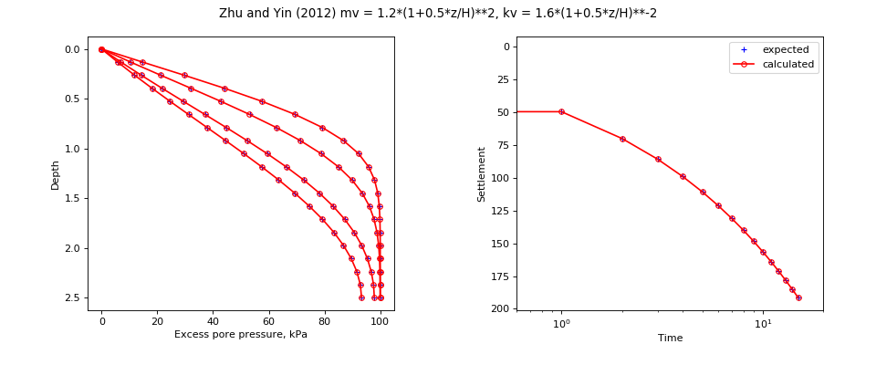

speccon example code: speccon1d_vr_vert_with_depth_dependent_mv_kv_zhuandyin2012.py¶
# speccon1d_vr example (if viewing this in docs, plots are at bottom of page)
# Vertical drainage with depth dependent permeability and compressibility.
# Zhu and Yin (2012) give an analytical solution for vertical consolidation
# where kv and mv vary according to mv = mv0*(1+alpha*z/H)**q and
# kv = kv0* (1+alpha*z/H)**p. To model using speccon1d_vr we approximate the
# distributinos with piecewise linear function. The orignal solution of
# Zhu and Yin (2012) is implemented separately in
# geotecha.consolidation.zhuandyin2012
# Zhu, G., and J. Yin. 2012. 'Analysis and Mathematical Solutions
# for Consolidation of a Soil Layer with Depth-Dependent Parameters
# under Confined Compression'. International Journal of Geomechanics
# 12 (4): 451-61.
# Note there are many more of these examples in the speccon_1d_vr test
# routines that can be found in the geotecha sourrce code
# This file should be run with python. It will not work if run with the
# speccon1d_vr.exe script program.
from __future__ import division, print_function
import numpy as np
from geotecha.speccon.speccon1d_vr import Speccon1dVR
import matplotlib.pyplot as plt
#Expected values
#t = time values
#tpor = time values por pore ressure vs depth output
#z = depth values
#por = excess pore pressure at time tpor and depth z.
#settle = settlement
t = np.array([ 0., 1., 2., 3., 4., 5., 6., 7., 8., 9., 10.,
11., 12., 13., 14., 15.])
z = np.array([ 0. , 0.13157895, 0.26315789, 0.39473684, 0.52631579,
0.65789474, 0.78947368, 0.92105263, 1.05263158, 1.18421053,
1.31578947, 1.44736842, 1.57894737, 1.71052632, 1.84210526,
1.97368421, 2.10526316, 2.23684211, 2.36842105, 2.5 ])
tpor = t[np.array([2,4,9,13])]
por = np.array(
[[ 0. , 0. , 0. , 0. ],
[ 14.67355514, 10.40528932, 6.9478055 , 5.78180724],
[ 29.57888041, 21.1645055 , 14.20340783, 11.8343646 ],
[ 44.09888584, 32.05180943, 21.70257559, 18.12252389],
[ 57.58320674, 42.8013085 , 29.36397652, 24.60042608],
[ 69.44444839, 53.12388946, 37.08988223, 31.21115238],
[ 79.25845477, 62.73135179, 44.76833267, 37.88694384],
[ 86.83932182, 71.36544094, 52.27696814, 44.55012872],
[ 92.26237958, 78.82739783, 59.48856982, 51.11485949],
[ 95.82413544, 85.0022523 , 66.27810786, 57.48969044],
[ 97.95205743, 89.87205113, 72.53079584, 63.58092097],
[ 99.09709856, 93.51401605, 78.15033325, 69.29648861],
[ 99.64623111, 96.08312814, 83.06624662, 74.55003194],
[ 99.87831495, 97.78286166, 87.23908646, 79.26457494],
[ 99.96373069, 98.83118188, 90.66226567, 83.3751421 ],
[ 99.99076102, 99.43000313, 93.35956014, 86.82953547],
[ 99.99801788, 99.74450265, 95.37770132, 89.58653348],
[ 99.99964732, 99.89475021, 96.77397903, 91.61094907],
[ 99.99994823, 99.95773745, 97.59921715, 92.86534606],
[ 99.99998809, 99.97464489, 97.8768125 , 93.29878245]])
settle = np.array(
[ [ 1.92503833, 49.44309786, 69.92309956, 85.63795758,
98.88619572, 110.55812783, 121.11036104, 130.81414062,
139.84619549, 148.32927168, 156.35271013, 163.98389265,
171.27505923, 178.26759418, 184.99484499, 191.48405032]])
####################################
#zhuandyin2012 properties to generate expected output
#ui = 100
#drn = 1
#nterms = 50
#mv0 = 1.2
#kv0 = 1.6
#H = 2.5
#alpha = 0.5
#q = 2
#p = -2
#z = np.linspace(0,H,20)
#t = np.linspace(0,15,16)
#tpor=t[np.array([2,4,9,13])]
#plot_eigs=False
#
#por, doc, settle = zhuandyin2012(
# z=z, t=t, alpha=alpha, p=p, q=q, drn=drn, tpor=tpor, H = H, kv0 = kv0, mv0 = mv0, gamw = 10,
# ui = 100, nterms = nterms, plot_eigs=plot_eigs)
####################################
reader = ("""\
neig=40
H = 2.5
drn = 1
mvref = 1.2
kvref = 1.6 / 10
kv = PolyLine(np.array(
[ 0. , 0.1, 0.2, 0.3, 0.4, 0.5, 0.6, 0.7, 0.8, 0.9, 1. ]),
np.array(
[ 1. , 0.90702948, 0.82644628, 0.75614367, 0.69444444,
0.64 , 0.59171598, 0.54869684, 0.51020408, 0.47562426,
0.44444444]))
mv = PolyLine(np.array(
[ 0. , 0.1, 0.2, 0.3, 0.4, 0.5, 0.6, 0.7, 0.8, 0.9, 1. ]),
np.array(
[ 1. , 1.1025, 1.21 , 1.3225, 1.44 , 1.5625, 1.69 ,
1.8225, 1.96 , 2.1025, 2.25 ]))
dTv = kvref/mvref/H**2
surcharge_vs_time = PolyLine([0,0,10], [0,100,100])
surcharge_vs_depth = PolyLine([0,1], [1,1])
ppress_z = np.array(
[ 0. , 0.13157895, 0.26315789, 0.39473684, 0.52631579,
0.65789474, 0.78947368, 0.92105263, 1.05263158, 1.18421053,
1.31578947, 1.44736842, 1.57894737, 1.71052632, 1.84210526,
1.97368421, 2.10526316, 2.23684211, 2.36842105, 2.5 ])
ppress_z/=H
settlement_z_pairs = [[0,1]]
tvals = np.array(
[ 0., 1., 2., 3., 4., 5., 6., 7., 8., 9., 10.,
11., 12., 13., 14., 15.])
ppress_z_tval_indexes = [2,4,9,13]
""")
a = Speccon1dVR(reader)
a.make_all()
# custom plots
title = ("Zhu and Yin (2012) mv = 1.2*(1+0.5*z/H)**2, kv = 1.6*(1+0.5*z/H)**-2")
fig = plt.figure(figsize=(12,5))
fig.suptitle(title)
#z vs u
ax1 = fig.add_subplot("121")
ax1.set_xlabel('Excess pore pressure, kPa')
ax1.set_ylabel('Depth')
ax1.invert_yaxis()
ax1.plot(por, z,
ls="None", color='Blue', marker="+", ms=5,
label='expected')
ax1.plot(a.por, z,
ls='-', color='red', marker='o', ms=5, markerfacecolor='None',
markeredgecolor='red',
label='calculated')
# settlement vs t
ax3 = fig.add_subplot("122")
ax3.set_xlabel('Time')
ax3.set_ylabel('Settlement')
ax3.invert_yaxis()
ax3.set_xscale('log')
ax3.set_xlim((0.6, 20))
ax3.plot(t, settle[0],
ls="None", color='Blue', marker="+", ms=5,
label='expected')
ax3.plot(t, a.set[0],
ls='-', color='red', marker='o', ms=5, markerfacecolor='None',
markeredgecolor='red',
label='calculated')
leg = ax3.legend()
leg.draggable()
fig.subplots_adjust(top=0.90, bottom=0.15, left=0.1, right=0.94, wspace=0.4)
#fig.tight_layout()
plt.show()
(Source code, png, hires.png, pdf)
{kind=link}
{kind=link}
